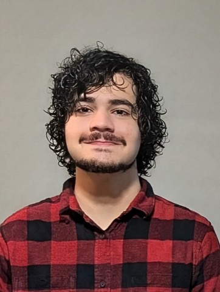

2026
What prototyping learning software taught me
Some things I learned while exploring and tinkering with my own projects.
Interface, colour and information design
For about a year I have kept a continuous body of self-directed work: interactive prototypes on colour perception, visualisation of abstract structure, and interfaces that teach a skill.

Projects in progress. Each one is an interactive prototype on colour, abstract structure, or learning a skill.
2026
Some things I learned while exploring and tinkering with my own projects.
Email is the best way to reach me.
victormac@edu.unifor.brMessing around with handwriting recognition experiments.
Fortaleza, Brazil